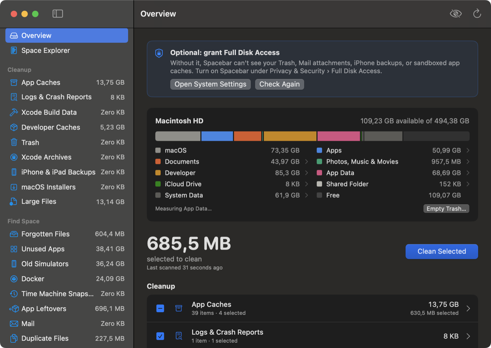
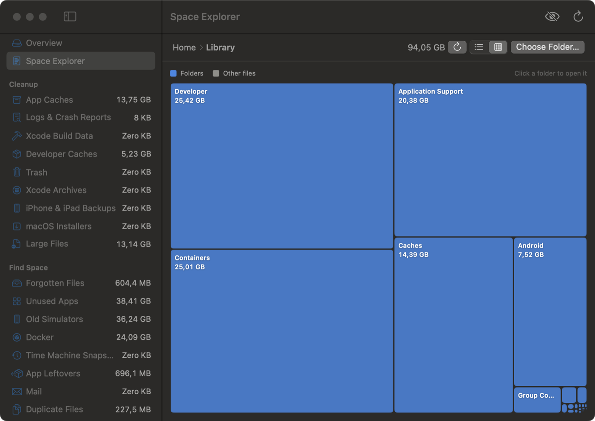
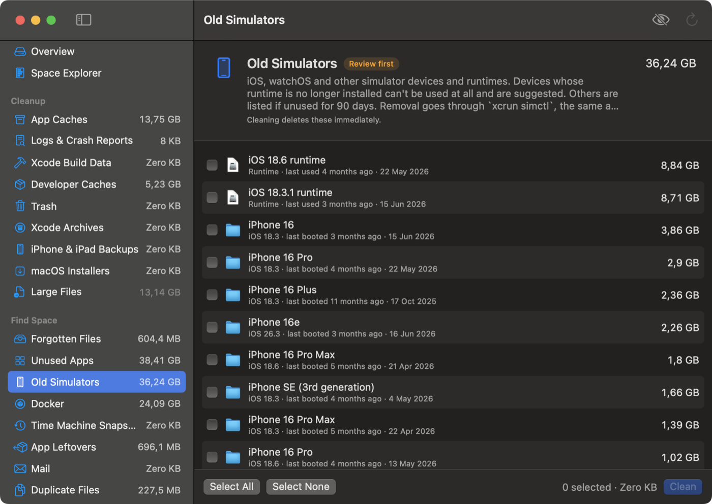

See what's using your Mac's disk, and safely free up space. Free, open source, and private: no accounts, no tracking, nothing leaves your Mac.
brew install --cask ovedaydin/tap/spacebar
or download the DMG · macOS 13 or later · Apple silicon and Intel

Measured, not estimated, and explained in plain words.
macOS, Apps, Documents, Developer, App Data, iCloud, Mail and more. Click any slice to explore it.
Swap, temporary files, logs, a waiting macOS update, snapshots: each part says whether it's safe to remove.
What every app really costs: the app plus its data, caches and settings, with Clear Cache and Uninstall.
Folders that grew this week, and "at this rate, your disk is full in about 5 weeks".
Any folder as a sorted list or a treemap, with search, Quick Look and keyboard navigation.
Sizes update as files change, and launch catches up on what changed while Spacebar was closed.
You review everything first, and almost everything can be put back.


Caches nobody used in a month, app leftovers, duplicates, forgotten downloads, old simulators, project build folders.
Every clean is listed and can be put back while its items are in the Trash.
"DMGs in Downloads older than 30 days", "node_modules untouched for 3 months". Matches go to the Trash.
Free the local copy of big iCloud Drive, Dropbox, Google Drive and OneDrive files you don't open.
Drop an app on the window to remove it with everything it left in your Library.
Uses at most half your Mac while scanning, at background priority, so it never gets in the way.
The same rules and safety checks, from anywhere.
spacebar status # free space on the startup disk spacebar scan # sizes and suggestions for every category spacebar clean --safe --dry-run # what a safe clean would remove spacebar show ~/Downloads # open a folder in Space Explorer
Shortcuts actions: Free Up Space, Get Available Space and Show Folder in Spacebar. In Finder, right-click a folder and choose Show in Spacebar.
In English, Turkish, Spanish and German, with VoiceOver labels and keyboard navigation.